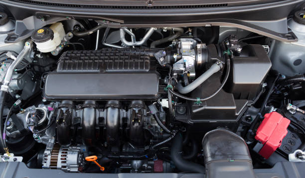

1.
MOTORE TERMICO
Il motore termico, o a scoppio, è il motore storico dell'automobile in grado di convertire il calore generato dallo scoppio della miscela di benzina ed aria in energia meccanica in grado di far muovere il mezzo. Può essere alimentato a benzina o diesel ed ha un efficienza termica intorno al 25%. Questa motorizzazione tende ormai a lasciare il posto a quelle ecologiche.
